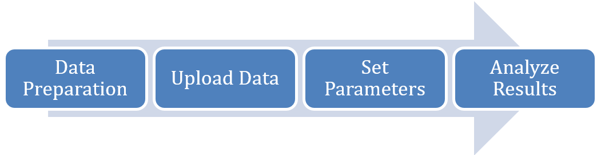
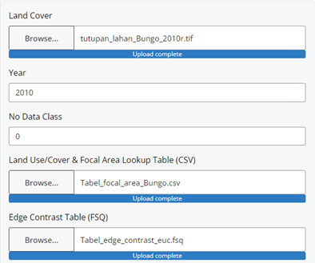
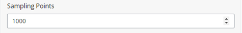
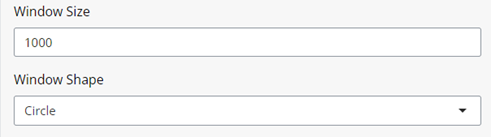
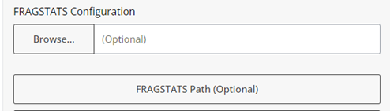
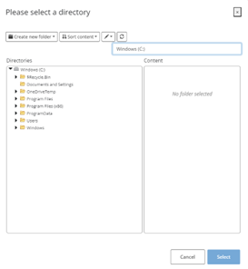
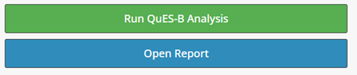

5 Biodiversity
5.1 Overview
QuES-B (Quantification of Environmental Services on Biodiversity) is a module from LUMENS which functions to analyze the condition and changes in the condition of biodiversity as a result of changes in land cover.
5.2 Usage
5.2.1 Workflow
The workflow for this module can be divided into four key steps.
Data preparation. In this step, users prepare the necessary data, noting the correct input specifications.
Upload data. Once all the data has been prepared, users input the data by clicking Browse or manually dragging the input data to the correct attribute.
Set parameters. The user sets the parameters of the multiple time series analysis they wish to conduct, which includes sampling points, window size and shape, and a fragstats configuration (optional).
Analyze results. Upon completion, the user will find the analysis results in the module or directly in the output folder. The module generates a webpage report containing a brief description of the module, summary of input data, and results containing visualizations of focal area map, TECI map, sampling grid, and DIFA plot.

5.2.2 Step-by-step instructions
Step 1: Data Preparation
Before using the QuES-B Analysis tool, prepare the following:
- Land Cover Map: A raster file of current land use/land cover (LULC) in GeoTIFF format.
- Land Use/Cover & Focal Area Lookup Table: A CSV file describing raster values with their corresponding land cover classes. Users define focal areas by selecting specific land cover classes.
- Edge Contrast Table: An FSQ file defining edge contrast between land cover types.
- (Optional) FRAGSTATS Configuration file.
Step 2: Uploading Data
Input your data into the left-hand side of the module by selecting the ‘Browse’ button for each data or drag your file from your computer into the data input box. Ensure that you upload the correct data input for each parameter. A blue bar with ‘Upload complete’ will appear once you have successfully input your data for each parameter.
Land cover: Click “Browse” and select your prepared land cover raster file. Ensure that the data is in GeoTIFF format with the relevant UTM projection system.
Year: Enter the year of your land cover data (e.g., 2010). This must be numeric.
No Data Class: Enter the value representing missing land cover data in your raster, e.g., cloud or shadow (default is 0).
Land Use/Cover & Focal Area Lookup Table: Click “Browse” and select your prepared CSV file.
Edge Contrast Table: Click “Browse” and select your prepared FSQ file.

Step 3: Setting Analysis Parameters
Set your desired sampling points. Data sampling is used to determine the exact landform for an area so that when illustrated on a map it will define the landform at its true scale. While default sampling point is 1000, meaning there will be 1000 points in the data that will be used for further processing, note users can input higher or lower values. The more sampling points correlates with a more sampling grids for calculating DIFA and more accurate analysis but will require longer processing time.

Set your desired window size and shape. A window size represents the dispersal radius, a threshold for ecological connectivity, if taxa associated with the focal area can typically move or disperse up to this distance. Window shape determines the dispersal form for each sampling size. Users can choose between square or circle form in the drop-down menu. Circle shape is more realistic but requires more computing resources and time.

Optionally, you may input a fragstats configuration and the directory it is derived from. The default path will be used if not specified, assuming the default Fragstats installation directory.

Select your output directory where you wish to save your report. Finish by clicking ‘Select’.

Step 4: Running the Analysis
Click on ‘Run QuES-B Analysis’ to initiate the analysis. A progress bar will appear on the bottom right corner, indicating the analysis status. Once completed, you may access your results by clicking ‘Open Report’ or ‘Open Output Folder’.

5.2.3 Tips
Large sampling points and window size result in a higher accuracy for calculating the focal area habitat distribution, contrast, and integration but require longer processing time and resources.
Movement of wildlife and seeds move naturally within a particular habitat. While opting for circular window shape may more realistically accommodate biodiversity movements, square window shapes allow for faster computing of TECI across the study area.
5.3 Data Requirements
5.3.1 Input Data & Parameters
| No | Data Name | Type | Format | Projection Requirements | Description |
| 1. | Land Cover Map | Categorical raster | GeoTIFF | UTM | A map classifying land use types for the start year. |
| 2. | Landuse/cover and focal area look up table | Tabular | CSV | A CSV file describing raster values with their corresponding land cover classes. Users define focal areas by selecting specific land cover classes. | |
| 3. | Edge contrast table | Parameters | FSQ | A predefined configuration defining edge contrast between land cover types |
5.3.2 Example Datasets
Practice data sets used in this module can be accessed at agroforestri.id/lumens-ques-b
5.3.3 Data Acquisition
Land cover maps can often be obtained from global or official national data. For creating your own land cover maps from satellite imagery, consider using software such as Google Earth Engine, ArcGIS and R.
5.4 Outputs
5.4.1 Output Files
5.4.2 Report Interpretation
After the analysis completes, you’ll find the following in your selected output directory:
Focal Area Map: A binary raster map in GeoTIFF format derived from the land cover map, displaying the user-defined focal area classes represented as 1.
TECI Map: A raster map in GeoTIFF format illustrating the spatial distribution of focal area fragmentation and integration across the landscape. It measures the contrast between adjacent land cover types. Lower TECI values indicate well-integrated areas with minimal contrast between adjacent land cover types. Conversely, higher TECI values represent more segregated areas with greater contrast between neighboring land uses. Gray areas represent areas outside the dispersal threshold from the focal area.
Sampling Grid: A polygon shapefile of sampling grids used to extract values of TECI and focal area size.
DIFA Plot: A plot illustrating the Degree of Integration of Focal Area (DIFA) Index, which measures how well integrated the focal habitat is within the landscape. The x-axis represents the Total Edge Contrast Index (TECI), while the y-axis shows the cumulative proportion of focal area. The curve depicts the relationship between habitat fragmentation (TECI) and habitat amount. The area under this curve determines the DIFA score, ranging from 0 to 100%. Higher scores indicate better habitat integration.
QuES-B Report: An overview of the analysis results in HTML format, providing detailed interpretations and visualizations of these outputs.
5.5 Theoretical Background
5.5.1 Model Description
QuES-B quantifies the composition and configuration of habitats as an approach to describing biodiversity conditions at the landscape scale. This analysis is performed by calculating the Degree of Integration of Focal Area (DIFA) index, focusing on the composition and configuration of focal areas.
5.5.2 Key Concepts:
Focal Area:
A focal area is defined as the taxa of interest or areas with high biodiversity. Users define these by selecting specific land cover classes.
The module will generate a Total Edge Contrast Index (TECI) map, illustrating the spatial distribution of focal area fragmentation and integration across the landscape by measuring contrast between adjacent land cover types, and Degree of Integration of Focal Area (DIFA) index, which quantifies how well integrated a focal area is within a landscape, indicating its capacity to conserve biodiversity.
QUES-B enables the comparison of the integration of focal areas across various zones or landscapes, assessment of temporal changes in habitat integration, and identification of vulnerable areas for conservation prioritization. In analyzing the dynamics of the focal area, the QUES-B module considers not only its area but also its spatial configuration. In other words, connectivity and dysconnectivity between focal area patches affect the output of the analysis.
TECI Map:
The habitat approach hypothesizes that biodiversity within a particular habitat is more vulnerable when focal areas edges are directly adjacent to land cover classes with a high degree of difference compared to classes with a low degree of difference.
In understanding TECI results, a value that approaches zero suggests a lower contrast between a focal area cell and the surrounding patches, indicating strong permeability for wildlife and higher chance for the habitat to sustain species biodiversity.
On the other hand, a maximum value of one hundred is associated with conditions where the focal area is very different from the pixels surrounding it (example: the focal area is a primary forest cover class that is ‘surrounded’ by built up area) hence lower permeability leading to lower habitat biodiversity.
Degree of Integration of Focal Area (DIFA) Index:
The magnitude of the DIFA value is influenced by several factors such as: total area, configuration and spatial distribution of the focal area at a certain point in time as well as the contrast of the focal area with the surrounding area. For instance, the need to clear forest areas for agriculture not only changes the surrounding land use into non-forest, but also leads to loss of forest area and decreases forest intactness.
Understanding these dynamics, an increase in DIFA indicates increasingly ideal conditions in the focal area which means the habitat is more intact and likely to support the local biodiversity.
5.5.3 Key Assumptions
5.5.4 Limitations
- Accuracy is limited by the quality and resolution of the input maps.
5.6 References
For more detailed information or troubleshooting, refer to the full QuES-B documentation or contact the tool developers.
LUMENS is free software and comes with ABSOLUTELY NO WARRANTY. Users are responsible for the results generated. Results depend on the quality of the input data (“garbage in, garbage out”) and may vary or be sensitive to the parameters used. Please report any problems encountered while using LUMENS as a GitHub issue. Feedback and questions are welcome [Contact Us URL].